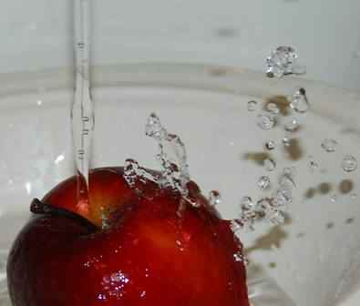
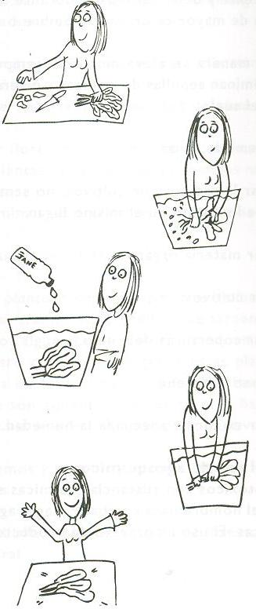

Higiene de los alimentos
¿Por qué es importante aprender sobre la higiene de los alimentos?
En la tierra, el agua y los animales se encuentran microorganismos que pueden ser muy peligrosos y que muchas veces acarreamos en nuestras manos, ropa, utensilios de cocina, esponjas, trapos o cualquier otro elemento que no fue correctamente higienizado.

Algunos consejos:
- Cuando guardamos alimentos es importante hacerlo en lugares cerrados para evitar que tengan contacto con roedores o insectos.
- Las carnes, huevos, leche, manteca deben ser guardados en la heladera.
- Los alimentos cocidos deben guardarse separados de los alimentos crudos, porque pueden contaminarse.
- Siempre debemos lavarnos las manos antes de manipular los alimentos, prepararlos y consumirlos.
- Las frutas y verduras deben ser lavadas cuidadosamente con agua de la canilla y jabón, luego debemos sumergirlas en agua con hipoclorito de sodio (cloro) al menos por 20 minutos (se debe colocar una cucharadita de cloro por litro de agua).
- No debemos consumir huevos poco cocidos, mayonesas caseras o merengues crudos.
- Es recomendable consumir leche pasteurizada y si no tenemos acceso a ella, siempre debemos hervirla antes de consumirla.
- Debemos mantener los alimentos alejados de nuestras mascotas.
